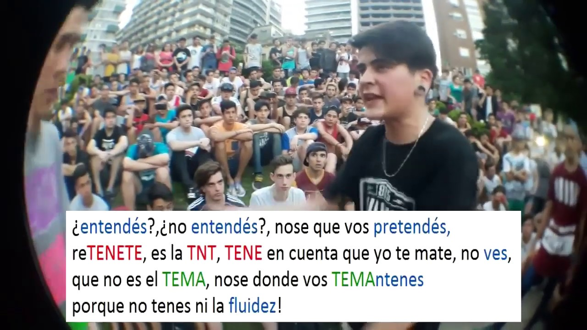
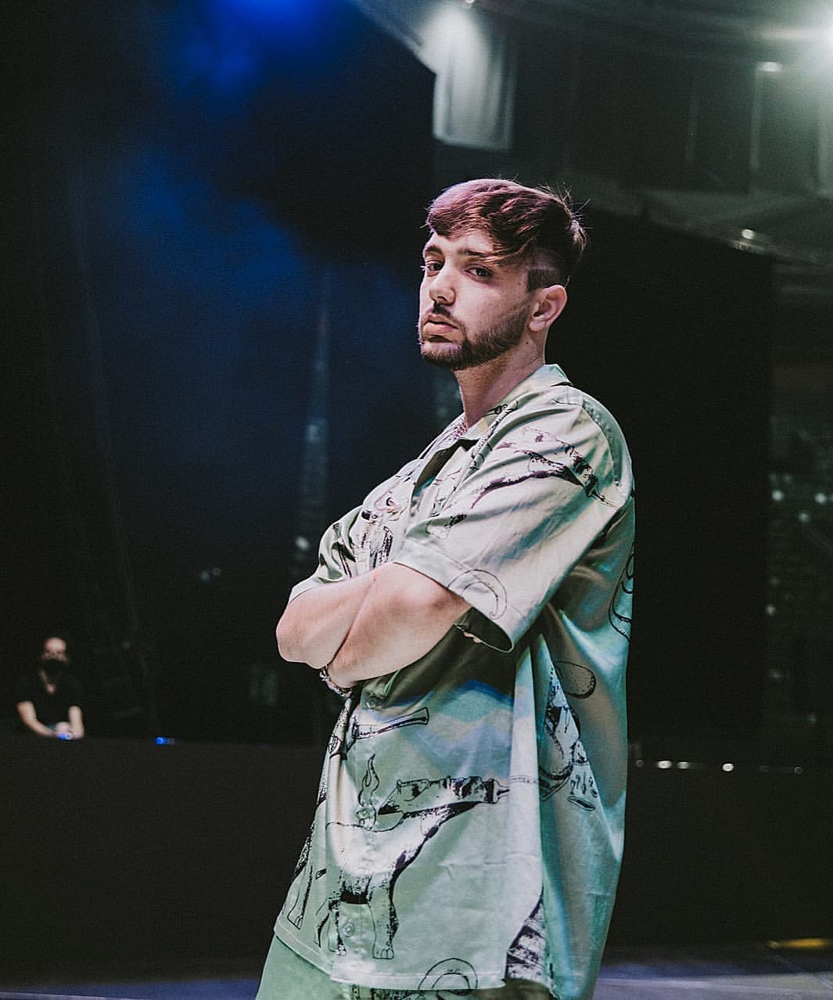
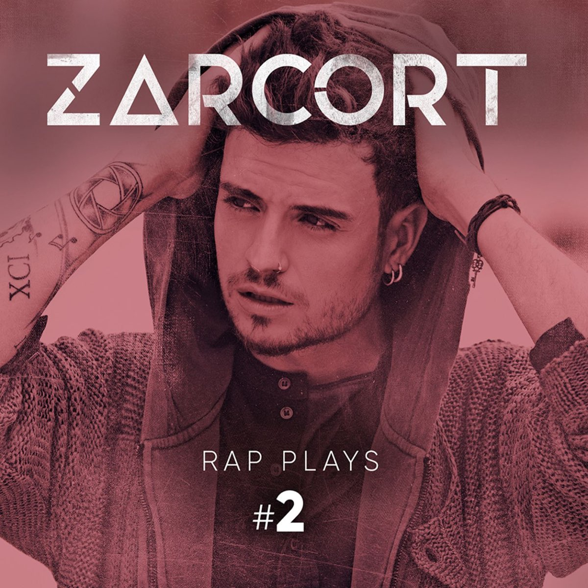

La metrica es un termino que en el Freestyle se usa cuando un freestyler hace rimas con una estructura compleja,
un ejemplo a esto seria:
"Yo te ESCUPIRE, te ESCULPIRE con FREESTYLE, MIS TAblas te pegan a este falso
ARTISTA, piensa que hace mejor estructura que yo en la PISTA rapeo hace 10 meses y SUPERE a este SUPER EGOISTA"
Aqui se puede ver la estructura de la rima, en Escupire y Esculpire, y en Supere y Super egoista.
Otras metricas pueden ser: "DE ESTE ESTADO estas DETESTADO", "MANTIENE, el MAN TIENE", y muchas mas que se pueden
crear de manera muy originial y creativa.

|
LIT-Killah: Mauro Román Monzón, mejor conocido como Lit Killah, es un cantante de trap y freestyler procedente de Argentina. En su freestyle, se caracteriza por su habilidad en el doble-tempo y métricas.
Zasko Master: Ginés Miñano Bernabéu, mejor conocido como Zasko o Zasko Master, es un freestyler español, nacido en Alicante. Es conocido por ser uno de los principales exponentes de la métrica en el mundo.

Bnet: Javier Bonet González, mejor conocido por su nombre artístico "Bnet" es un freestyler español, conocido por su particular estilo con técnicas combinado a un buen punchline.
|
El rap-play es un subgénero del hip hop que combina rap y videojuegos. Es un rap de un videojuego con partes de este de fondo. El rap-play es esencialmente con ritmo del Hip Hop y algunos filtros.

|
Otro dato Interesante es la expereciencia que Jezaell conto, de como fue su primera competencia, lo que el dijo fue:
"Sentia nervios al ser la 1era vez en esta movida, pero a pesar de eso cuando me llamaron a mi batalla me arme de valor,
y dije 'ES TU MOMENTO, DEMOSTRA EL ESTILO QUE TANTO FORJASTE!!!' "
Jezaell perdio en su primera competencia en los 8vos de final, pero a pesar de perder demostro que tenia una gran
habilidad en tirar metricas, varios raperos de la competemcia lo felicitaron, que por ser su primera competencia, no lo hizo mal.
Volver a la Pagina Principal
|